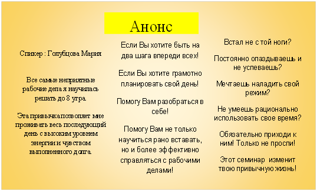
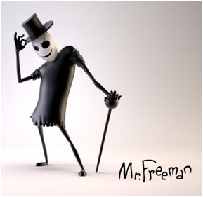
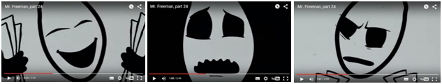
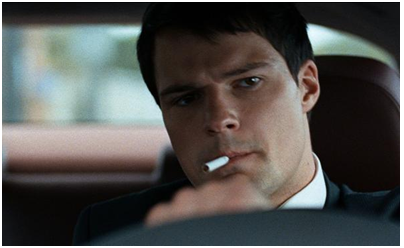
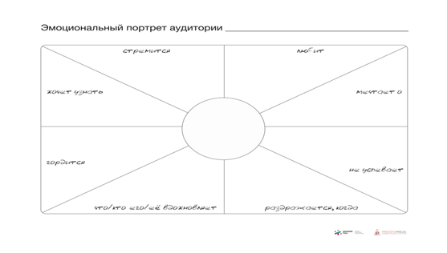
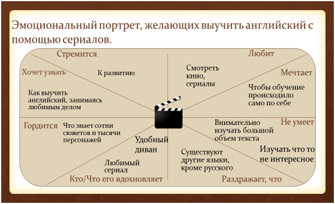

Уважаемый студент, вам необходимо составить анонс вашей будущей презентации. Для этого:
ОБРАЗЕЦ ВЫПОЛНЕНИЯ ЗАДАНИЯ
Заголовок презентации - очень важная ее составляющая. От него на 100% зависит внимание аудитории к вашей теме, на 50 % зависит как аудитория настроит себя на ее содержание. Заголовок презентации рекомендуется строить исходя из формулы: число, слово-триггер, обещание решить какую-нибудь проблему аудитории.
Слова триггеры – это «спусковые крючки» нашего внимания. Как правило это яркие, нестандартные эпитеты, уместные для предмета презентации, например:
Удачные примеры заголовков:
10 эффективных советов составить резюме
6 нестандартных методов оптимизации трафика
5 полезных советов для тех, кто хочет выучить английский по сериалам и фильмам
Анонс – это предварительное оповещение о чем-либо
Его структурные элементы:
Пример анонса презентации: 3 причины просыпаться в 6 утра, чтобы быть успешным
Его структура отвечает требованиям. Хорошая самопрезентация, ЭПА четко ограничил интересующихся данной темой, вопросы презентации представлены кратко. Замечания те же – отсутствие заголовка, визуализации на слайде, а она – мощный инструмент привлечения внимания.

Уважаемый студент, вам необходимо провести:
Выбор текста для анализа, - индивидуальный: это может быть фрагмент документации из вашей профессиональной сферы, выступление телеведущего, монолог героя фильма, и т.д.
ОБРАЗЕЦ ВЫПОЛНЕНИЯ ЗАДАНИЯ
Анализ языка А. Г. Гордона на предмет присутствия в нем жаргона, просторечья, терминов, средств выразительности литературного языка.
Александр Гарриевич Гордон – это человек, ставший настоящей легендой российского телевидения. По многочисленным опросам телезрителей, он входит в число самых известных и популярных ведущих на современном телевидении России. Кроме того, Александр Гарриевич известен также как педагог и автор многочисленных фильмов. Данный факт позволяет говорить о Гордоне как об одном из самых талантливых людей на современном российском телевидении. Я убедилась в этом около 2 лет назад, когда начала интересоваться деятельностью этого радио- и телеведущего, киноактёра, кинорежиссёра.
В последующие годы в качестве телеведущего наш сегодняшний герой вел огромное множество самых разных проектов. К числу наиболее известных среди них стоит отнести программы «Гордон» (НТВ), «Стресс» (НТВ), «Гордон Кихот» (Первый канал Россия), «Наука о душе» (Психология 21), «Гражданин Гордон», «Закрытый показ» (оба - Первый канал Россия). Последний из названных проектов стал особенно успешным. За свою жизнь Александр Гордон снял четыре фильма, среди которых наиболее известными стали проекты «Пастух своих коров» и «Огни притона».
Александр Гарриевич прожил некоторую часть своей жизни за границей, в США, и многие его публичные выступления, представленные во Всемирной паутине, - на английском языке, но с 1997 года он вернулся обратно на Родину и на данный момент принимает участие во многих телевизионных шоу, например, «Мужское - Женское». Именно на эфирах из этой передачи я буду анализировать язык и речь моего оратора.
Для анализа предлагается фрагмент его выступления: «Что такое сегодня кризис? Простому человеку в обществе потребления говорили: бери кредит. Хорошо работай. Обеспечивай завтрашний день. У тебя все будет. Ты должен сегодня сделать все для того, чтобы завтра было хорошим. Приходит так называемый кризис, и все, что человеку говорили, становится туфтой. Кредиты не дают, в долгах как в шелках, завтра стало еще чудовищнее. И он уже понимает, что у него не будет новой машины или нового дома, да и эту работу сохранить вряд ли удастся. И тогда ему нужно пихать какие-то другие ценности немедленно. Иначе это взрывоопасно: разочаровавшийся в жизни человек страшнее для государства, чем кто бы то ни было».
Язык Александра Гордона очень разнообразен. Оратор часто использует жаргонизмы – специфическую языковую систему, созданную с целью обособления и являющуюся средством позиционирования определенного социального слоя, например, «понты», «фигня», «туфта» и др.. В данном тексте видно, что Александр использует жаргонизмы для того, чтобы показать свою близость к народу. С этой же целью в тексте используется и просторечие – лексика недостаточно грамотных людей, например, «вдалбливать», «пихать». Наряду с этим язык А. Гордона богат интернационализмами – словами, имеющими хождение во многих языках и являющимися следствием глобализации, например, «кредит», «кризис». Общественно-политическая лексика также представлена в тексте, поскольку публичный человек всегда доносит значимую для большинства информацию – «государство», «ценности», «общество потребления». Также в тексте представлены разнообразные средства выразительности: фразеологизмы - «в долгах как в шелках», метафоры – «завтра», эпитеты – «новый», «завтрашний», оценочная лексика - «чудовищно», «взрывоопасно», «страшно». Как и каждый оратор нашего времени, Александр Гарриевич применяет вводные слова («Во-первых», «конечно», «пожалуй», «я считаю», «безусловно»), лексический повтор для акцентирования внимания («У меня одна надежда, у меня только одна надежда, что у нас вертикаль власти окончательно не заржавела»).
В речи Александра Гордона соответствует требованиям чистоты, понятности, точности. Чистота речи обеспечивается отсутствием слов-паразитов – «типа», «как бы», «ну» - их мы не встретили в тексте. Понят-ность речи обусловлена отсутствием редких терминов, понятий, все слова являются общеупотребительными. Точность речи также соблюдается благодаря присутствию общенаучных социально значимых понятий – «кризис», «кредит», «общество потребления». Значения этих понятий воспринимается однозначно, обеспечивая точность речи. Реализуются в речи А. Гордона когнитивный (познавательный), коммуникативный (взаимодействия, обмена информацией), этический (направленного на добро) аспекты. Когнитивный аспект связан с изменением уровня познания окружающей действительности – мы узнаем о стандартных мотивах поведения членов общества потребления – обеспечение завтрашнего дня сегодняшними кредитными обязательствами. Коммуникативный аспект речи связан с умением организовать взаимодействие с аудиторией. Это достигается с помощью вопросов и ответов: «Что такое сегодня кризис? Простому человеку в обществе потребления говорили: бери кредит. Хорошо работай. Обеспечивай завтрашний день. У тебя все будет». Этический аспект речи связан с оценкой коммуникативной ситуации с позиции добра и зла. Конечно же этот аспект реализуется в полной мере с помощью большого количества оценочной лексики - «чудовищно», «взрывоопасно», «страшно». Как мы видим, оценка дается отрицательная.
Таким образом, анализ языка и речи А. Гордона показал, что оратор оперирует большим количеством: форм языка – жаргон, просторечье, интернационализм, термины, общественно-политическая лексика; средств выразительности языка – фразеологизмы, метафоры, эпитеты. Речь А. Гордона в полной мере соответствует требованиям понятности, точности, чистоты. В ней реализуются познавательный, коммуникативный и этический аспекты. Все это создает неповторимый образ оратора, который не боится высказывать своё личное мнение, даже если многих оно может не устраивать, нести в массы новейшие идеи и мысли, что заставляет к нему прислушиваться и уважать.
Уважаемый студент, вам необходимо провести анализ:
Выбор текста для анализа, - индивидуальный: это может быть фрагмент документации из вашей профессиональной сферы, выступление телеведущего, монолог героя фильма, и т.д.
ОБРАЗЕЦ ВЫПОЛНЕНИЯ ЗАДАНИЯ.
Анализ речи оратора на соответствие нормам литературного языка (орфоэпическим, акцентологическим, лексическим, грамматическим)
Михаил Ефимович Николаев – Председатель Верховного Совета ЯАССР (1990-1991), первый президент Республики Саха (Якутия) (1991-2002), заместитель Председателя Совета Федерации Федерального Собрания Российской Федерации (2002-2010), Государственный советник Республики Саха (Якутия) (с 2010 года), депутат Государственной Думы Федерального Собрания Российской Федерации VI созыва (с 2011 года), почётный профессор многих зарубежных и российских университетов. Вся республика почитает Михаила Ефимовича Николаева как отца народа Саха. И не напрасно, даже в свои 78 лет он активно продолжает развивать республику. Он лично посещает и организовывает различные мероприятия и встречи, дает зеленый свет многим полезным проектам, среди которых множество, направленных на развитие детей. Ведь именно в детях он видит будущее Якутии, что подтверждает его недавнее выступление на церемонии вручения именной стипендии Первого Президента Республики Саха «Знанием победишь»: «Вот почему мы провели за три последних года два международных конгресса по проекту «Музыка для всех» с тем, чтобы мы воспитывали наших детей на пяти постулатах: шахматы, музыка, рисование и искусство, языки и спорт».
Проведем анализ речи оратора на соответствие нормам литературного языка (орфоэпическим, акцентологическим, лексическим, грамматическим)
Для анализа возьмем текст обращения к студентам Республики Саха, во время праздника Ысыах в 2013 году:
«Этот наш старинный праздник народа Саха. Сегодня он из глубины веков дышит и несет нам счастье, счастье благословения – алгыса. Такие праздники у нас не только в Якутии проводятся, граница праздника выше. Я бывал в Северной Америке, в Европейских городах, везде и всюду представители народа саха с любовью организуют такие праздники. Когда я вижу это, меня переполняет гордость от того, что наши дети так сильно любят свой народ, свою культуру, свой самобытный менталитет и они распространяют это за пределы республики, потому что наш менталитет – это менталитет взаимопонимания, толерантности. Мы очень терпеливы и терпимы ко всему. Как северный народ мы никогда ни с кем не воевали. Это тысячелетняя история, это огромнейшее достижение, востребованная в сегодняшнем беспокойном мире толерантность. Обращаюсь к студентам, обучающимся и живущим в городе Москва. Быстрее взрослейте, на пороге столетие нашей республики, мы будем отмечать его в двадцать втором году, а через десять лет еще будем праздновать основание нашего города – 400 лет. И к этому времени вы станете уже достойными людьми, обогащёнными знаниями, но самое главное - это знание надо научиться практически применять…»
В приведенном фрагменте Михаил Ефимович допускает массу орфоэпических ошибок. Слова, заканчивающиеся на «и», он произносит на «е» («праздники»; «глубинки»). В слове «обращаюсь» сильно заглушает две последние буквы, и в итоге слышится как «обращаю». Слово «наш» произносит с удлиненным «ш», а в слове «бывал» добавляет «ь» в конце. Все эти орфоэпические ошибки связаны с тем, что русский язык не является для него родным. Однако основные орфоэпические нормы соблюдаются: закон редукции гласных можно проследить в большинстве слов, например, слово «обучающимся» в устном варианте звучит как «абучающимса», - безударные гласные «о» и «я» редуцируются к «а». Закон уподобления согласных выполняется в словах «благословение», «везде» - гласные «е» и «и» смягчают согласные, после которых стоят. Закон оглушения работает в словах, имеющих на конце звонкие согласные, например, «из», «народ», слышатся как «ис», «нарот».
В приведенном тексте депутат совершил акцентологическую ошибку. В слове «добыли» ставит ударение на «о», что может быть производным от профессионального произношения слова <дОбыча> Однако, специфика ударения в русском языке в речи оратора в целом реализуется. Так, например, встречаются слова с подвижным ударением – терпЕть, терпение, терпелИвый; и с неподвижным ударением (это, как правило, заимствованные слова) – менталитЕт, менталитета.
В выступлениях Николаева мы часто замечаем, такие нарушения лексических норм русского языка как тавтология («Моим главным желанием было желание открыть людям новые возможности»; «Мы очень терпеливы и терпимо ко всему»; «наш менталитет – это менталитет взаимопонимания»). Но в основном он соблюдает лексические нормы русского языка правильным подбором слов, соответствующих стилю речи – в нашем случае – публицистическому.
Михаил Ефимович в приведенном фрагменте несколько раз нарушает грамматические нормы русского языка. Пропустил предлог «к» в словосочетании «Обращаюсь (к) студентам». Неправильно согласуются слова в словосочетании «на пороге столетие(столетия) нашей республики». А в предложении «У нас, к большому сожалению, есть сейчас молодежи (молодежь), которые(которая) хорошее образование получают(получает), в хороших ВУЗах, но трудно поддается к созданию самостоятельных рабочих мест, где-то хотят(хочет) устроится в бюджетной сфере и так далее» - большое количество синтаксических и морфологических ошибок. Николаев допустил ошибку в словосочетании «ихний коллектив», допустим просторечия, а должно быть «их коллектив». В предложении «Это говорит о возможности наших ребят» должно быть «Это говорит о возможностях наших ребят».
Вывод: в тексте выступления Николаева М. Е. допущены ошибки по всем четырем типам норм литературного языка. Причиной чему может быть наличие акцента (родной язык оратора - не русский, а якутский).
Уважаемый студент, вам необходимо провести:
Выбор текста для анализа, - индивидуальный: это может быть фрагмент документации из вашей профессиональной сферы, выступление телеведущего, монолог героя фильма, и т.д.
ОБРАЗЕЦ ВЫПОЛНЕНИЯ ЗАДАНИЯ
Анализ стиля речи, используемого Томом Реддлом
Том Марволо Реддл, в следствии своего развития получивший имя Воландеморт, является главным антагонистом серии романов о Гарри Поттере писательницы Джоан К. Роулинг, одним из великих темных волшебников данной истории, авторским аналогом Кощея Бессмертного, отрицательного персонажа народных сказок. Личность этого литературного персонажа заинтересовывает его историей. Сильный политик и оратор, имя которого внушало ужас любому человеку. Именно эта особенность и стала причиной интереса к анализу ораторских качеств Волан-де-Морта.
Обратимся к корням имени персонажа. Оригинальное имя Voldemort имеет французское происхождение: приблизительное значение французского словосочетания «vol de mort» — «полёт смерти». Поскольку имя «Волан-де-Морт» составлено из букв имени, оно является анаграммой имени «Том Марволо Реддл». Так как имя Волан-де-Морта не произносят, большинство героев произведения называют его «Сам-Знаешь-Кто» или «Тот-Кого-Нельзя-Называть», а приспешники политика называют его «Тёмный Лорд».
Обратимся к биографии персонажа. Мать Тома Марволо Реддла, Меропа Мракс родила своего сына в приюте, где после её скоропостижной смерти и воспитывался мальчик, который с младенчества отличался от других детей. «Знаете, он почти не плакал», — говорит миссис Коул Дамблдору (директору магической школы-интерната Хогвартс), принесшему Тому письмо из Хогвартса. Отец мальчика бросил их еще до его рождения. Думаю, для должного понимания ситуации, необходимо прояснить, что мать Воландеморта была чистокровной колдуньей, когда как отец являлся магглом, то есть обычным человеком, не имеющим магических способностей. Такие люди презирались в чистокровных волшебных семьях, и потому, влюбившись в отца Воландеморта, его мать попросту сбежала из дома, прихватив некоторые семейные ценности. В последствии, став старше, Том тщательно скрывал свое «нечистокровное» происхождение от окружающих его людей.
Таким образом, еще с детского возраста данный персонаж проявляет качества лидера и оратора, а с взрослением приобретает последователей, готовых сделать все для поддержки радикального режима политики. Падение Лорда Волан-де-Морта и его отсутствие в течении 13 лет не дало должного успокоения для населения, и потому возрождение Волан-де-Морта ознаменовало начало новой эпохи борьбы, войны и страха.
Волан-де-Морт встречается в каждой книге серии, и каждая встреча все больше и больше раскрывает характер и личность персонажа.
Для анализа стиля речи данного литературного персонажа взяты его выражения и цитаты из книг перевода издательства Росмен.
Основным стилем речи Тома Реддла является публицистический стиль, так как деятельность главного темного волшебника неотрывно связана с публичными выступлениями, как в кругу своих последователей, так и перед народом. Что же касается подстиля, то в речи этого персонажа используется политико-агитационный подстиль, предпосылками которого являются использование обращений, императивных конструкций.
Определим основные черты стиля, используемого Томом Реддлом:
Используемые лексические средства:
В речи оратора реализуются информативная и воздействующая функции речи. Каждое его выступление содержит определенную информацию, воздействует на слушателей посредством вопросительных и императивных конструкций.
Таким образом, в речи Волан-де-Морта преобладает публицистический стиль речи с присущими ему чертами, лексическими средствами и функциями.
Уважаемый студент, вам необходимо составить текст самопрезентации, опираясь на вопросы:
Уважаемый студент, вам необходимо составить 3 вида вступления, выбор темы выступления должен определяться сферой вашей профессиональной деятельности.
Вариант №1: «Рассказать одной фразой о себе с точки зрения темы выступления»
«Перед тем, как озвучить название своей презентации, хочу сказать, что я не ставил себе целью создание какой-то депрессивной и мрачной атмосферы, а хотел рассказать вам о вещах, которые нам в молодом возрасте зачастую, не понятны, и если не начать разбираться в этом сейчас, то… в будущем они могут стать вашими… глубочайшими сожалениями.
Итак, сегодня я расскажу вам про 5 ВЕЩЕЙ, КОТОРЫЕ ВЫ МОЖЕТЕ НЕ УСПЕТЬ СДЕЛАТЬ».
Вариант № 2: «Рассказать одной фразой о своих результатах с точки зрения вашей темы».
«Здравствуйте уважаемые студенты. Скорее всего вы сталкивались с проблемой запоминания и извлечения из памяти необходимой информации. Я уже несколько лет занимаюсь изучением и применением методик запоминания. Мой личный рекорд: список из 250 слов, 50 образов. Это первая ступень к фотографической памяти. И сегодня я хочу предложить вам презентацию на тему: 7 простых, но эффективных способов улучшить свою память”».
Вариант № 3: «Рассказать личную историю, имеющую отношение к вашей презентации (она работает магически, наш мозг любит истории)»
«Доброго времени суток. Меня зовут Анастасия и мне хотелось бы поведать о своей нелегкой борьбе с лишним весом. К своим 19 годам при росте 170, я весила 86, поклонников у меня было немного. Вернее, их совсем не было. Жизнь казалась страшным испытанием. Были проблемы с трудоустройством, самооценка стремилась к нулю, но я взяла себя в руки. И сейчас мой вес составляет 50 кг. Я хочу поделиться с вами 7-ю парадоксальными способами похудения».
Уважаемый студент, вам необходимо проанализировать диалог с точки зрения вида деловых коммуникаций, аргументируя каждую позицию: Цель, Условия организации коммуникации, Коммуникативные формы, Коммуникативные средства и технологии, Ожидаемый результат.
«Здравствуйте, Джон! Как поживаете? Вы отправили нам открытку пару недель назад с вопросом о дешевых акциях с наибольшей возможностью роста и с наименьшем риском падения. Было такое или нет?
-Да, что-то такое припоминаю.
-Так, прекрасно! Вот почему я Вам звоню, Джон. Кое-что совершенно случайно попало мне в руки. Это, возможно, лучший вариант, который я видел за полгода. За 60 секунд я попробую вкратце его описать. У Вас есть минутка? (не дожидаясь ответа). Компания называется «Аэро-тайм интернешенл». Это самые передовые технологии местного производства!. Они получают патент на новое поколение радарных детекторов, применяемых и в военных и в гражданских целях. Сейчас, прямо сейчас, Джон). Свои акции они продают на прямую по 10 центов за штуку. И, кстати, Джон, наши аналитики подсчитали, что они взлетят до небес очень скоро! Ваша прибыль, с каких-нибудь 6 тысяч достигнет 60 тысяч долларов!»
Для анализа воспользуйтесь информацией:
Познавательная коммуникация
Цель: расширить информационный фонд партнера, передать необходимую информацию, прокомментировать инновационные сведения.
Условия организации коммуникации: учет познавательных возможностей конкретных деловых партнеров, их индивидуальных установок на получение новой информации и интеллектуальных возможностей для ее переработки, понимания и восприятия.
Коммуникативные формы: лекции и семинары, доклады и сообщения, беседы и консультации, отчеты, а также письменные работы (рефераты, контрольные, курсовые, дипломные, проектные), позволяющие оценить степень усвоения теории вопроса, просмотр обучающих программ.
Коммуникативные средства и технологии: комментарий, аргументация и доказательство; характеристика причинно-следственных связей, сравнительный анализ; интерпретация новой лексики, резюмирование, использование вербальных и невербальных ключей доступа в аудиальный, визуальный и кинестетический каналы, речевая культура и ораторское мастерство.
Ожидаемый результат: освоение новой информации и применение ее в практической деятельности, внедрение инноваций и саморазвитие .
Убеждающая коммуникация
Цель: вызвать у делового партнера определенные чувства и сформировать ценностные ориентации и установки; убедить в правомерности стратегий взаимодействия; сделать своим единомышленником.
Условия организации коммуникации: опора на восприимчивость партнера, его личностную мотивацию и интеллектуально-эмоциональную культуру.
Коммуникативные формы: убеждающая, призывающая к действию речь, пресс-конференция, дискуссия, спор. Переговоры, напутствие, комплимент, беседа, презентация, “круглые столы”.
Коммуникативные средства и технологии: аргументация, демонстрация и доказательство; разъяснение и сравнительный анализ; факты, цифры и примеры, показывающие преимущества; опора на эмоциональный настрой партнера и включение его кинестетического канала с помощью вербальных и невербальных ключей доступа; учет контраргументов партнера; психологические приемы присоединения, формирование аттракции, создание атмосферы доверия.
Ожидаемый результат: привлечение партнера на свою позицию, изменение личностных установок, взглядов, убеждений, переориентация целей.
Экспрессивная коммуникация
Цель: сформировать у партнера психоэмоциональный настрой, передать чувства, переживания, побудить к необходимому действию.
Условия организации коммуникации: опора на эмоциональную сферу партнера, использование художественно-эстетических средств воздействия на все сенсорные каналы партнера.
Коммуникативные формы: речи по специальному поводу, презентации; беседы и собрания; митинги; рассказы о ситуации, о фирме, о человеке; брифинги; мозговой штурм, синектика, демонстрации видео-, кинофрагментов; анализ возможных последствий; лозунги и призывы.
Коммуникативные средства и технологии: аудио-, видео- и художественные средства; краткость речевых конструкций; эмоционально окрашенная, образная лексика; актерское мастерство: улыбка, голос, взгляд; яркость жестикулирования, мимики; демонстрация конгруэнтности; опора на актуальные потребности слушателей; искренность демонстрируемых чувств.
Ожидаемый результат: изменение настроя партнера, провоцирование необходимых чувств (сострадания, сопереживания), вовлечение в конкретные акции и действия.
Суггестивная коммуникация
Цель: оказать внушающее воздействие на делового партнера для изменения мотивации, ценностных ориентаций и установок, поведения и отношения.
Условия организации коммуникации: внушаемость партнера, его недостаточная информированность, недостаточная критичность ума, слабый уровень контрсуггестии, высокий авторитет суггестора (осуществляющего внушение), создание атмосферы доверительности.
Коммуникативные формы: беседы, митинги, пресс-конференции, брифинги, дебаты, реклама, собрания, консультации , тренинг.
Коммуникативные средства и технологии: разъяснение внушаемых установок; управление эмоциональным напряжением; внушение через приемы: идентификация, ссылки на авторитет, персонификация; предупреждение, угроза, шантаж, психологический террор, моббинг и другие приемы манипулирования; психологическое присоединение.
Ожидаемый результат: изменение поведения партнера, смена установок, ценностных ориентаций .
Ритуальная коммуникация
Цель: закрепить и поддерживать конвенциальные отношения в деловом мире; сохранять ритуальные традиции фирмы, предприятия, создавать новые.
Условия организации коммуникации: ритуальный (церемониальный) характер акций, художественно оформленная пространственная среда; соблюдение конвенций; опора на национальные, профессиональные традиции и нормы общения.
Коммуникативные формы: торжественная, рамочная, траурная речи, ритуальные акты, церемонии, обряды; праздники, посвящения, чествования; презентации и торжественные собрания.
Коммуникативные средства и технологии: использование вербальных и невербальных ключей доступа в аудиальный, визуальный и кинестетический каналы участников; включение участников в активную массовую деятельность; неординарность сюжетов при сохранении традиций.
Ожидаемый результат: формирование чувства патриотизма и национальной гордости; сохранение традиций, закрепление новых ритуалов.
Уважаемый студент, вам необходимо провести анализ имиджевых характеристик персонажа; специфики невербальной коммуникации оратора функций невербальной коммуникации (управления, подкрепления, манипуляции, замещения), средств невербальной коммуникации - кинесики (жесты, мимика, визуальный контакт, поза, походка), проксемических параметров (ориентация, дистанция), такесики (прикосновения – рукопожатие, объятие, похлопывание, поцелуй), просодики (интонация, смех, кашель, пауза, тембр, темп, громкость речи).
Выбор материала для анализа, - индивидуальный: это может быть фрагмент телевизионной передачи, рекламного ролика, деловых переговоров в сфере вашей профессиональной деятельности, выступление телеведущего и т.д. Анализ сопровождайте визуализацией.
ОБРАЗЕЦ ВЫПОЛНЕНИЯ ЗАДАНИЯ
Анализ имиджевых характеристик и специфики невербальной коммуникации Mr. Freemanа
Mr. Freeman (рус. Мистер Свободный Человек / Мистер Фриман) является главным персонажем анимационного веб-сериала, появившегося на YouTube 21 сентября 2009 года и завоевавшего немалую популярность в Рунете. Основное содержание его роликов —монологи, в провокационной форме, критикующие образ жизни современного обывателя. Мы не можем провести аналогии между сегодняшним образом персонажа и его биографией, так как она в принципе не предстает перед зрителем. Но, тем не менее, образ персонажа нам понятен. Его манера речи, интонация привлекает внимание многих. Невербальные характеристики персонажа является прекрасным объектом для исследования. Среди многочисленных роликов я выбрала «Mr. Freeman. Part 00». Он, собственно, как и все остальные - насыщенный, яркий, кричащий, настоящий ролик-протест, характерный для Фримана. Хотелось бы отметить, что местоимение «Я», по мнению Фримана, обязано писаться с большой буквы, поэтому в тексте написано именно так

Имидж персонажа. Мистер Фриман является персонажем рисованным, мультипликационным, поэтому его имидж - все-таки заслуга авторов. Тем не менее, имидж Фримана соответствует его характеру. Что касается персональных характеристик Фримана, то нам известно немногое: очевидно, что это персонаж мужского рода, что вызывает определенное доверие к нему, возраст персонажа ближе к среднему. Одет Мистер Фриман в черный костюм, на голове нередко встречается шляпа, все это указывает на его статус, интеллигентность, как и именование его «Мистером». На его лице нередко появляется ухмылка, прищур, его можно сравнить с хитрой лисой, это основа его характера. Из его видеообращения можно сделать вывод, что он несет эмоцию уверенности, искренности. Поза со смещенным назад центром тяжести демонстрирует самодостаточность героя. Жесты размеренные, подчеркивающие собственную значимость. Таким образом, кинесика представлена в полном объеме.Особо интересна манера речи оратора. Он часто повышает голос до крика, порою, мы слышим лишь шепот, при сильных эмоциях его голос дрожит, а иногда слышен плачь. Просодические характеристики Мистера Фримана передают его эмоциональность.

Если говорить о социальных характеристиках Фримана, то внимание стоит уделить тому факту, что мы не можем судить о материальном положении персонажа или же о его принадлежности к какой-либо социально группе, тем более о происхождении. Нам известно лишь то, что Фриман борец за свободу слова, мысли, действия. Он уверен, что люди превратились в серую зомбированную массу и причиной тому «демократическая» власть. Цель оратора «промывка» мозга, стимулирование людей к совершенствованию и к самореализации.
Ну и закончить описание имиджа оратора следует символическими характеристиками. Мистер Фриман, для определённого круга лиц, а если быть точнее для своих зрителей является символом «свободы», символом бунтарства и революции. Зрители не могут сами строить революцию, они просто видят ее во Фримане.
Знание основ невербальной коммуникации помогает адекватно оценивать вербальную речь говорящего, гармонично сочетать вербальную и невербальную составляющие, что в конечном итоге формирует уровень доверия в коммуникации и способствует ее успеху. Невербальная коммуникация несет в себе такие важные функции, как управление (передачи эмоций – радости. Гнева. Страха. удивления), подкрепление (сопровождение устной речи жестами, мимикой, позой), манипуляция (противоречия вербальной коммуникации, либо воздействия на слушателей – воинственным видом во время призывов), замещение (не используется, так как голос, вербальная коммуникация – основа имиджа персонажа), а также является более надежным источником информации, чем вербальная коммуникация.
Средства невербальной коммуникации:
Использование данных средств и проглядывается в видеообращениях Мистера Фримана.
Например, кинесика, наиболее частая поза Фримана - руки за спиной, голова высоко поднята, подбородок выставлен. Данная поза выражает чувство уверенности, оратор прекрасно знает и понимает то, о чем говорит. Ввиду частой смены кадров мы не может судить о жестах Мистера Фримана, однако можно отследить его мимику, она довольно разнообразна. На лице Фримана можно разглядеть страх и радость, удивление и печаль, что зависит от текста и эмоций, которые в нем должны быть переданы.
Просодика обозначается с помощью индексальных знаков и связана прежде всего с интонацией. Интонация – комплексное средство языка, оно включает в себя мелодику, логическое ударение, громкость, темп речи и паузу. Для русского языка характерно наличие 11 зон эмоциональных состояний (радость, испуг, нежность, удивление, равнодушие, гнев, печаль, презрение, уважение, стыд, обида), каждое из которых передается соответствующей интонационной моделью. Все данные эмоциональные состояния можно найти в видеообращениях Фримана, которые просматриваются не только через мимику, но и тембр, громкость. Не редкость услышать смех Фримана, который имеет совершенно различные окраски. От зловещего смеха, до смеха нервного, переходящего в крик. Оценить какой-либо телесный контакт не представляется возможным, как и соблюдение Фриманом особой дистанции, ведь непосредственного контакта с нашим персонажем никто не достигал.
Таким образом, имидж персонажа в немалой степени складывается посредством типичных для него невербальных знаков. Большая их часть представлена кинесикой, просодикой, позволяющие реализовать функции управления, подкрепления и манипуляции.
Уважаемый студент, вам необходимо провести анализ личностных и деловых качеств персонажа.
Выбор материала для анализа, - индивидуальный: это может быть фрагмент телевизионной передачи, рекламного ролика, деловых переговоров в сфере вашей профессиональной деятельности, выступление телеведущего и т.д. Анализ сопровождайте визуализацией.
ОБРАЗЕЦ ВЫПОЛНЕНИЯ РАБОТЫ
«Действие фильма «Духless» происходит в 2000-е годы в Москве. Главный герой – Макс Андреев, топ-менеджер в российском филиале крупной российско-французской компании, занимающейся производством консервов «Тандюэль». Макс – типичный представитель «офисного бомонда». Герой нашего времени, прожигатель жизни, завсегдатай пафосных клубов столицы. Он употребляет наркотики, катается в нетрезвом виде на спортивном автомобиле, окружен вниманием моделей.
Образ эпохи складывался в соотвествии с бурно развивающимся капитализмом. «Живи быстро – умри молодым». «Get rich or Die trying» - вот девизы начала нулевых. Крупные фирмы начинают зарабатывать в России баснословные деньги. Заработки высших и низших слоев общества - пропасть. Топовые менеджеры получают невообразимые зарплаты и как следствие, безумие. Вчерашние «Новосильцевы» скромные и полные идеалов, превратились в неуёмных разъевшихся толстосумов. Ценности старого мира рухнули, а новые сформироваться не успели, в результате – наркотики, женщины легкого поведения, золотые унитазы, цинизм, снобизм и в конечном счете, усталость от бесконечного веселья. Наш герой именно таков. Внезапно он осознает, что при наличии материальных благ человека 21 века, он несчастлив и опустошен. Действие фильма происходит в разных локациях: Москва, Санкт-Петербург (офисы, клубы, рестораны, дом главного героя)
Герой фильма – Андреев М.Е. – мужчина 29 лет, симпатичной внешности, спортивного телосложения, стильный. Компании нет. Высокая зарплата, по московским меркам – успешен. Обладает квартирой, машиной. Не женат.
Первое представление героя фильма - заявка на победителя:
«Меня зовут Макс Андреев, мне 29 лет. Для всех я хозяин жизни, точнее топ-менеджер…»

Внешний вид Макса: дорогой деловой костюм, ухоженный вид.
Манера поведения оправдана его социальным положением – мота и циника: чуть ссутулившаяся походка, смотрит на женщин – с вожделением, на подчиненных – с пренебрежением. Выражение лица, то ироничное, то напряженно-думающее. Старается всячески угодить, выходящему на пенсию начальству. Прекрасно осознает «правила игры». Сирота. Всего добился сам. И по принципу «из грязи в князи», заработав очень много стал «прожигать жизнь». Любимец женщин.
Манера общения Андреева резкая, саркастичная, наполненная самоуверенностью и высокомерием. С начальством – напротив, соблюдает субординацию.
Таким образом, первое представление героя, его манера поведения и общения говорят о нем как о человеке глубоко высокомерным, не пытающийся построить ни с кем какие-либо отношения, потому что единственной ценностью его в жизни является ведение «свободного» образа жизни. Этим он доказывает себе и зрителям свою успешность.
Для описания личностных качеств Андреева обратимся к сюжету фильма:
Макс Андреев – молодой мужчина, не женат. Друзей, родственников из контекста фильма – нет. Точнее есть один друг - Вадим, но и тот кажется больше любит деньги… Роскошный и беспечный образ жизни который он ведет, приводит его к кризису. Возможно даже к кризису средних лет. А именно, Андреев после случившихся с ним финансовых перипетий (включая увольнение с работы) начинает осознавать, что его жизнь пуста. И чувствует он себя вымотанным. В его жизнь приходит МГУшница Юля, девушка современных взглядов на жизнь. Романтичная (свойственно возрасту), но без иллюзий. Занимается защитой животных и рассуждает «как взрослая». Эта встреча переворачивает жизнь Макса: во-первых, он влюбляется; во-вторых, осознает, что эта девушка его единственный шанс выбраться из этого бесконечного порочного круга бессмысленности его существования. Эта девушка его спасение. И как свойственно многим людям, он подсознательно боится изменить свою жизнь, оправдывает своё поведение (не звонит, не пишет главной героине), тем что якобы он ей не пара, у него другая жизнь и они не подходят друг другу. Тем не менее всё закончится хорошо, в момент, когда Юля выйдя на массовые митинги, попадёт в полицию, и Макс вытащит её оттуда, помогая ей, он понимает, что они должны быть вместе.
Профессионализм Андреева представлен в реплике главы компании (филиала): «Хочу представить Вам нашего «Орфея»….Таким образом, сравнением с Орфеем подчёркивается, особый профессионализм Андреева в сфере маркетинга.
Выделим наиболее популярные виды деловых качеств и оценим их присутствие в образе М. Андреева:
Подводя итог, можно сказать, что в образе М. Андреева личностные качества преобладают над деловыми.
Уважаемый студент, вам необходимо составить эмоциональный портрет аудитории (ЭПА) вашей будущей презентации. Для этого:
ОБРАЗЕЦ ВЫПОЛНЕНИЯ ЗАДАНИЯ
Заголовок презентации - очень важная ее составляющая. От него на 100% зависит внимание аудитории к вашей теме, на 50 % зависит как аудитория настроит себя на ее содержание. Заголовок презентации рекомендуется строить исходя из формулы: число, слово-триггер, обещание решить какую-нибудь проблему аудитории.
Слова триггеры – это «спусковые крючки» нашего внимания. Как правило это яркие, нестандартные эпитеты, уместные для предмета презентации, например:
Удачные примеры заголовков:
10 эффективных советов составить резюме
6 нестандартных методов оптимизации трафика
5 полезных советов для тех, кто хочет выучить английский по сериалам и фильмам
Заполните все поля, исходя из темы вашей презентации:

ЭПА для презентации на тему: «5 Полезных советов для тех, кто хочет выучить английский по сериалам и фильмам.
